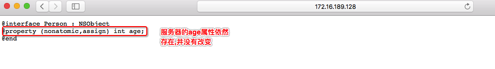
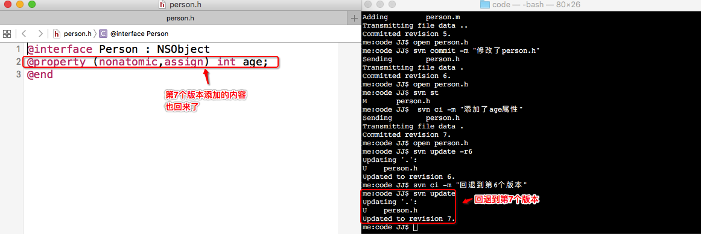
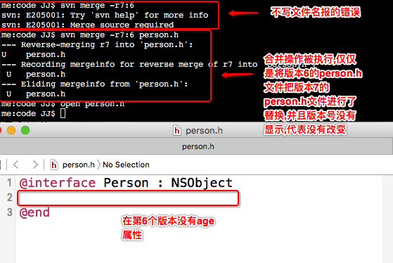
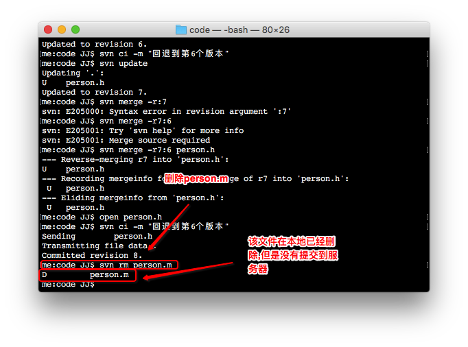

- 一.命令行的简写(别名)
1.svn checkout : svn co
2.svn commit : svn ci
3.svn status : svn st
4.svn update : svn up
- 二.张三开发
1.person.h添加属性
open person.h

2.使用svn status简写查看文件状态
svn st

3.使用svn commit简写将person.h提交到服务器,-m 与双引号还是需要写的
svn ci -m "添加了age属性"

- 三.经理开发
使用svn update的简写,将最新的代码更新到本地
svn up

- 四.版本回退
1.张三打开person.h,刚新添加了一个age属性,如果不需要age属性那么可以给它删掉,但是如果修改的内容非常多,那么删除操作异常繁琐,并且这些操作,仅仅是在这个版本做的操作,那么如果回退到上一个版本那么这个版本做的操作就没有了
svn update -r6 : 回退到第6个版本,本地的版本号也会变成6

2.刚刚的操作并不是真正的回退,而是版本进行了回退,并且person.h的内容也回退了,虽然现在是想要的结果,但是仅仅是在本地进行回退,服务器的age属性依然存在
3.这个时候想要把本地修改的提交到服务器,但是提交操作并不会成功,本地的版本号为6,而服务器的版本号为7,如果本地的版本号小于服务器的版本号那么提交失败
svn ci -m "回退到第6个版本"

4.这样的操作提交失败,那这命令的意义在于仅仅是让你查看上一个版本是否是你想要回退到的版本,之后通过另外一个命令进行回退
1.首先回退到最新的版本,保证与服务器的版本一致,才能进行回退
svn update
 2.通过以下命令将版本从第7个版本回退到第6个版本也可以说是进行合并,仅仅是内容的回退,版本号不会改变,文件名必须写上否则就会回退失败
svn merge -r7:6 文件名
 3.这个时候服务器并没有改变,但是本地版本号不小于服务器的版本号,那么就可以进行提交操作
svn ci -m "回退到第6个版本"

4.项目经理想要拿到最新的修改,只需要更新则可
svn update

- 五.删除文件
1.张三创建了person类,比如person.m没有用想给它删掉,如果找到文件后右键删除是删除不掉的,下次更新依旧会更新下了,如果想彻底删除只能通过命令行来删除
svn remove person.m 或者通过简写svn rm person.m
2.将删除的操作提交到服务器
svn commit -m "删除了person.m"

3.项目经理更新服务器的删除操作到本地

- 六.查看版本信息(查看这个项目之前都更新了哪些版本)
1.一般情况下首先更新到最新的版本,将服务器所有最新的操作更新到本地
svn update
2.之后通过命令查看所有版本信息
svn log

3.这里可能会发现,所有的操作人员都属于同一个人,因为要演示多人开发,又没有多台电脑,虽然创建了两个终端,但是终端的脚本都属于同一个,所以操作者也为一个,如果是实际开发中,都是在自己的电脑上就不会有这种问题产生
- 七.总结:
1.命令行的简写可以通过 svn help查看更多的简写
2.版本回退:先回退到那个版本,查看是否是你想要的那个版本,之后更新回到最新的版本,再把那个版本的文件进行合并
注意点:本地版本号如果低于服务器版本号,那么commit操作不会被执行
3.删除文件:不要找到文件后右键删除,要使用命令行,否则删除操作不会被执行,下次更新依旧会更新到该文件
4.查看版本信息:一般情况下,先更新到最新版本,之后再查看版本信息
5.在公司中比较常用的命令就2个
svn commit
svn update